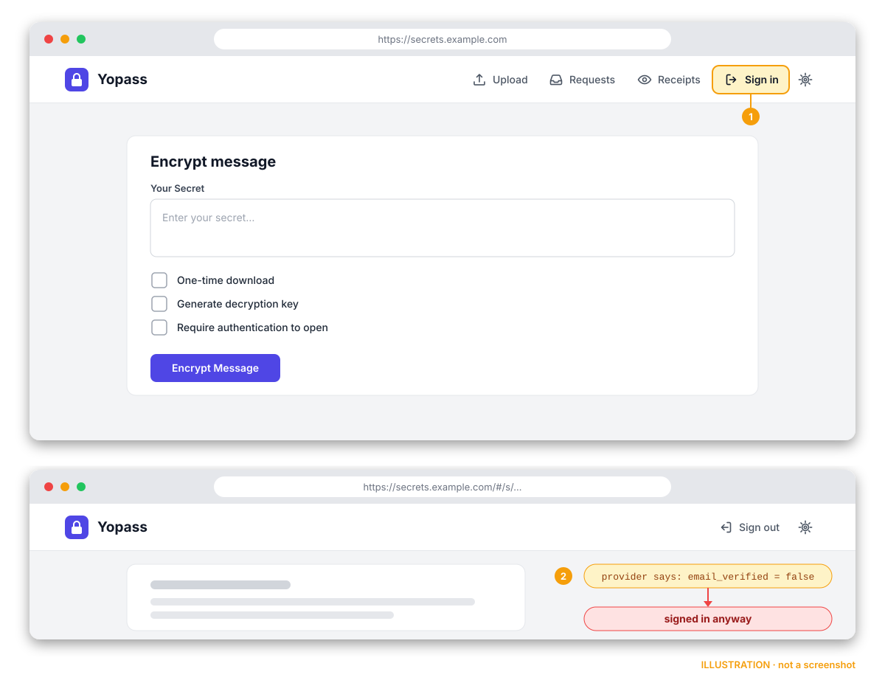

Merged 26 Sep 2026 First hit on open source
Yopass: unverified emails could pass OIDC domain restrictions
BudgetScan flagged a missing email_verified check in the login of Yopass, an open-source tool for sharing secrets, passwords and files. Our patch became the first commit of the maintainer's merged fix.
What was wrong
In an OIDC login, the identity provider returns claims about the user: the email address and, optionally, email_verified, which says whether the provider actually checked that address. Yopass used the email to enforce its list of allowed email domains (the AllowedEmailDomains setting) but did not look at email_verified. OIDC is an optional, licensed feature of Yopass; when it is configured, a Sign in button appears in the navbar.
So someone with an unverified account at an identity provider under an allowed domain could get past the domain restriction. Whether that is possible in practice depends on the identity provider.

How it was fixed
Our first patch rejected logins whose email was not verified, logged the attempt, and added tests. The maintainer, Johan Haals, pointed out that email_verified is an optional claim, so enforcing it blindly could break existing setups. He built on our commit in a new pull request, which:
- requires
email_verified: truefor new logins by default and rejects a missing or false claim before a session is created; - lets providers that omit the claim opt out with
--oidc-require-verified-email=false(orOIDC_REQUIRE_VERIFIED_EMAIL=false), with a startup warning and configuration validation; - keeps domain restrictions enforced in either mode;
- adds compatibility tests and operator documentation, and records the change as a breaking change for the release notes.
Our original commit was kept as the first commit of that pull request, with its authorship.
Timeline
- 23 Sep 2026. BudgetScan flagged the missing check. We opened pull request #3966 with a fix and tests.
- 24 Sep. An automated review asked for stronger tests, which we added. The maintainer raised the optional-claim concern.
- 25 Sep. The maintainer built on our patch in pull request #3973 and closed #3966 in its favour.
- 26 Sep. #3973 was merged. By default, OIDC logins now require a verified email.
How to read this
The scanner found the problem and a human maintainer decided how to fix it safely. That is how we want it to work: findings are leads for people, not verdicts. It is one data point, not a benchmark, and we will publish measured results once we have them. Thanks to Johan Haals for the quick, careful handling.